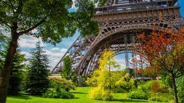

Descubra a magia de Paris, onde a história se entrelaça com a elegância contemporânea. Das icônicas avenidas aos cafés charmosos, explore uma cidade que respira arte, cultura e romance. Conheça mais em nossa página exclusiva sobre os encantos parisienses.
Paris

Jogos
Cultura
Desvende a riqueza de cultura da França, onde a arte, a gastronomia e a moda se entrelaçam em um ballet encantador. Das majestosas obras no Louvre aos sabors refinados das brasseries parisienses, explore a essência que torna a França um farol cultural. Descubra mais em nossa página destinada a cultura francesa.